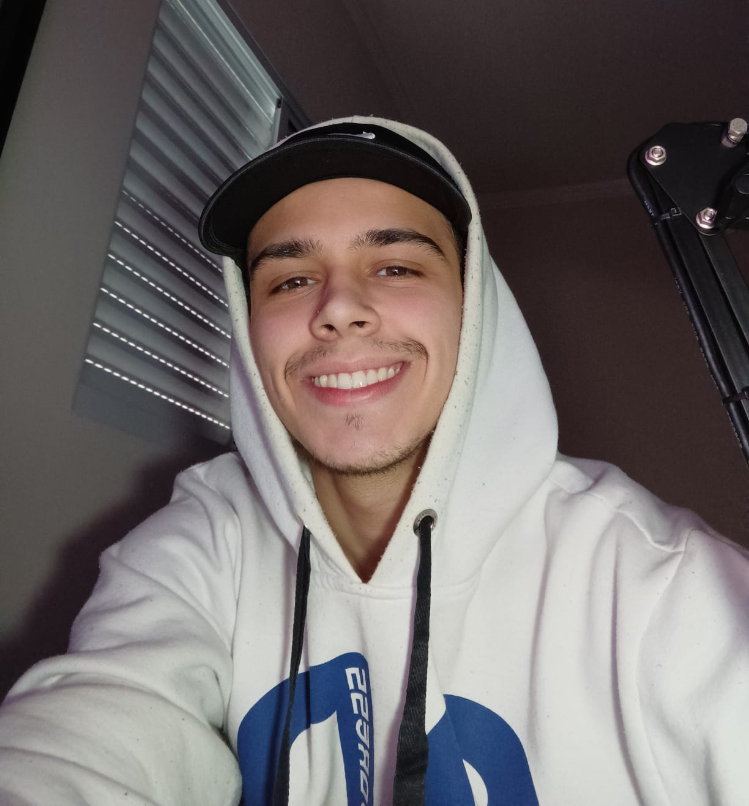

"Meu nome é Leonardo da Nave, tenho 19 anos, sou designer e técnico em mecânica industrial. Nasci e cresci na zona norte de São Paulo e atualmente estou cursando Análise e Desenvolvimento de Sistemas na São Paulo Tech School. Minha paixão por jogos começou com 8 anos de idade quando ganhei meu primeiro computador. De início eu jogava muito Club Penguim, Transformice, Kogama, Red Crucible, entre outros. Em 2009 conheci o jogo que vinha a ser minha maior paixão durante minha infância, o Minecraft. Este jogo estimulou muito a minha curiosidade para aprender novas tecnologias, como edição de vídeo, edição de imagem e modelagem 3D devido ao canal no YouTube que eu tinha, não é atoa que eu virei Designer..."
O Counter-Strike, mais conhecido como CSGO, entrou na minha vida em 2016 quando dois amigos decidiram migrar do Minecraft para o mesmo. De início eu hesitei bastante, mas depois que comecei a jogar e nunca mais parei. O CSGO é um jogo que te faz querer alcançar o topo, ele te instiga a ser melhor a cada dia, sem contar dos campeonatos que te proporcionam uma emoção inexplicável. O público do CSGO é muito fiel ao jogo, e isso faz com que qualquer campeonato seja inesquecível. Um dos times que me inspirou e me inspira muito é o da Luminosity Gaming. Não só pela jogabilidade dos players, mas pela história de vida que cada um tem e pelas dificuldades que passaram para estarem aonde estão hoje em dia. Por muito tempo quis ser um jogador profissional, mas logo soube que não teria tanta oportunidade pois não tinha tanta disponibilidade para treinar de 8 a 12 horas por dia. Ainda sim, me divirto muito jogando meus amigos nas madrugadas de fim de semana, e só o sentimento de estar jogando o jogo que eu amo com as pessoas que me fazem bem, já basta.
Esta foto ao lado significa muito para mim. A pessoa ao meu lado é Gabriel Fallen Toledo, uma pessoa que dedicou sua vida ao Counter-Strike e à comunidade brasileira. Se o CSGO é um jogo popular no Brasil hoje em dia, grande parte disso é por causa deste homem, não é atoa que ele me inspira todos os dias a nunca desistir dos seus sonhos, porque por mais que tarde, um dia eles vão se realizar.
"Não existe sucesso sem esforço e não existe esforço sem disciplina!"
~ Marianna Moreno
"Resilência é seguir em frente mesmo quando estiver difícil"
~ Dan
"Todo mundo pode ser inteligente, basta ser curioso e não ter medo de errar."
~ Wendel Henrique Ferreira